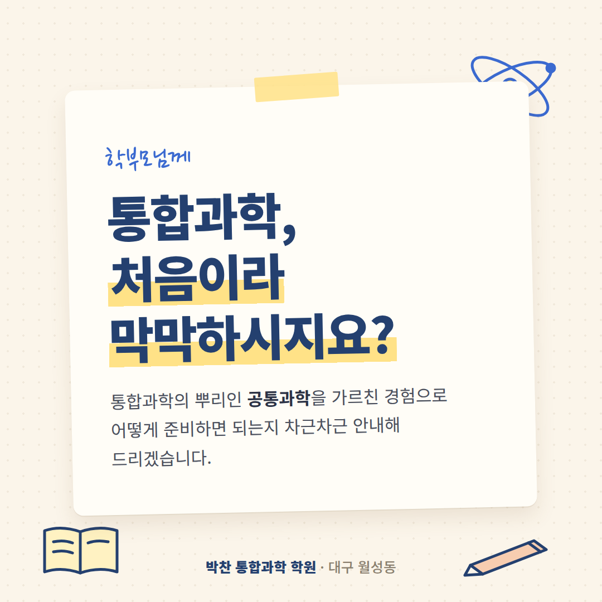
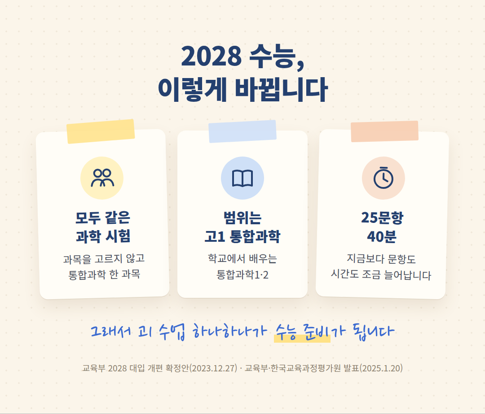
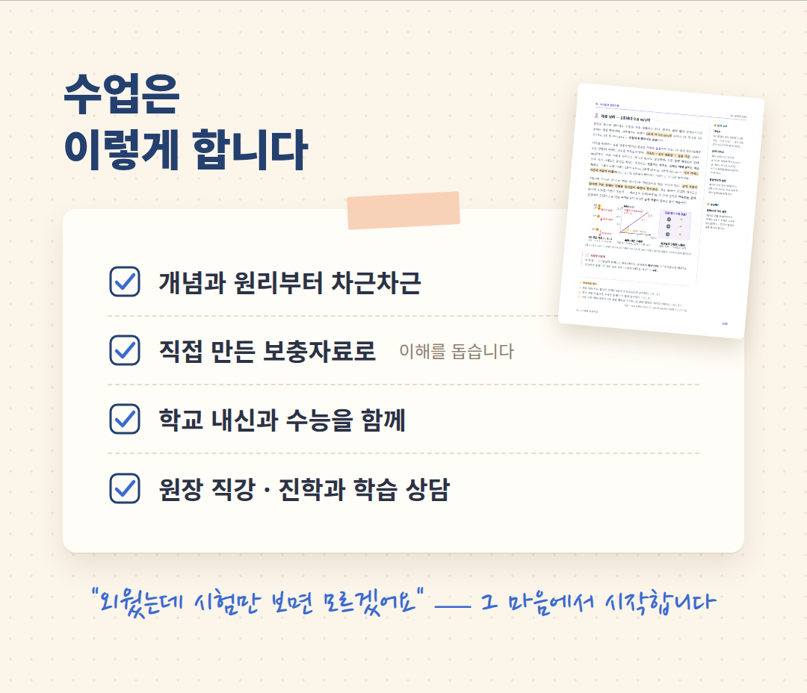

안녕하십니까.
대구 월성동 박찬 통합과학 학원
원장 박찬입니다.
월성동에서 과학학원을 찾고 계신
학부모님께 인사드립니다.
2028학년도 수능부터
과학탐구는 선택과목 없이
'통합과학' 한 과목이 됩니다.
오늘은 그 변화와 함께
저희 학원의 수업을 소개해 드리겠습니다.

2028 수능, 이렇게 바뀝니다
모든 수험생이 같은 문항으로
통합과학을 치릅니다.
문항은 25개, 시간은 40분으로
지금보다 늘어납니다.
시험 범위는 고1 때 배우는
통합과학1·2입니다.
학교 내신 범위가
곧 수능 과학 범위입니다.

공통과학을 가르친 경험으로
통합과학의 뿌리는 '공통과학'입니다.
물리·화학·생물·지구과학을
처음으로 한 과목에 묶은
고1 과학이었습니다.
저는 그 공통과학을 가르쳤고,
오랜 입시 지도의 경험으로
바뀌는 수능에 맞춰 준비해 왔습니다.
과목을 따로 떼어 외우기보다
하나로 이어 이해하게 하는 것,
그것이 통합과학 공부라 믿습니다.
수업은 이렇게 합니다
"외웠는데 시험만 보면 모르겠어요."
학생들에게 가장 많이 듣는 말입니다.
그래서 외우기 전에
왜 그런지부터 함께 살핍니다.
수업 내용을 더 쉽게 이해할 수 있도록
그림과 정리, 확인 문제를 담은
보충자료도 직접 만들어 드립니다.
· 개념과 원리부터 차근차근
· 직접 만든 보충자료로 이해를 돕습니다
· 학교 내신과 수능을 함께
· 원장 직강, 진학과 학습 상담

수업이 끝나도 복습은 이어집니다
강의를 촬영해 두어
집에서도 그날의 수업을
다시 볼 수 있습니다.
결석한 날의 수업도
촬영한 영상으로 따라잡을 수 있어
진도가 밀리지 않습니다.
일주일 무료 수강
먼저 일주일 들어 보시고
등록을 결정하셔도 됩니다.
수업이 아이에게 맞는지
직접 확인해 보십시오.
개설 강좌 · 교습비
【확인 필요 · 개설 강좌】
【확인 필요 · 교습비】
학원 등록 제2019-115호
오시는 길
대구 달서구 월성동
월성 CGV 건물 5층
상담 문의 053-213-3577
대구 월성동에서 통합과학을
차근차근 준비하고 싶으시다면
편하게 전화 주십시오.
정성껏 상담해 드리겠습니다.
감사합니다.
박찬 드림